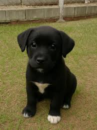
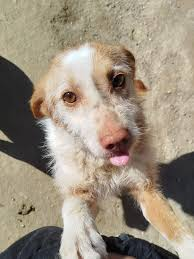
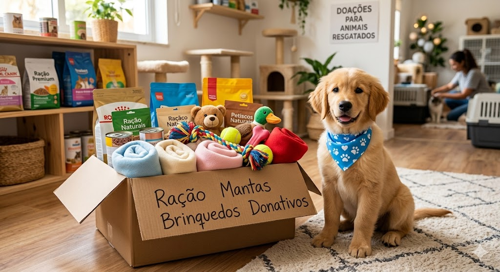

A Clínica Pets acredita que todos os animais merecem um lar cheio de amor. Por isso, trabalhamos em parceria com associações locais para promover a adoção responsável.
Cãezinhos à Procura de uma Família
Estes são alguns dos meninos que estão atualmente ao cuidado das associações nossas parceiras e que procuram uma casa:

Bono (3 meses) - Muito brincalhão e enérgico. Ideal para famílias com crianças.

Simão (2 anos) - Porte médio, calmo e já ensinado a andar à trela.
Plataformas de Adoção Reais em Portugal
Se procura um novo melhor amigo, recomendamos que visite as seguintes plataformas e associações de resgate animal:
Adota-me.org: A maior base de dados de animais para adoção em Portugal.
👉 Visitar o Adota-me
Animais de Rua: Associação que ajuda milhares de animais errantes em todo o país, incluindo no Porto.
👉 Visitar a Animais de Rua
MIDAS (Matosinhos): Movimento Internacional em Defesa dos Animais, uma excelente associação no distrito do Porto.
👉 Visitar a MIDAS
Fundo de Resgate Clínica Pets 🆘🐾
Frequentemente acolhemos animais de rua em estado crítico que precisam de cirurgias de emergência, medicação e internamento antes de poderem procurar uma família. O nosso Fundo de Resgate sobrevive graças à generosidade da nossa comunidade.

Toda a ajuda conta para dar uma segunda oportunidade a quem mais precisa.
Pode fazer a diferença e ajudar os nossos resgatados das seguintes formas:
Donativo Financeiro (MB WAY): Envie o seu contributo para o número: 912 345 678 com a descrição "Resgate Pets".
Donativos em Espécie: Aceitamos sacos de ração (seca ou húmida), areia para gatos, mantas limpas, transportadoras e brinquedos. Pode entregar diretamente na nossa receção no Porto.